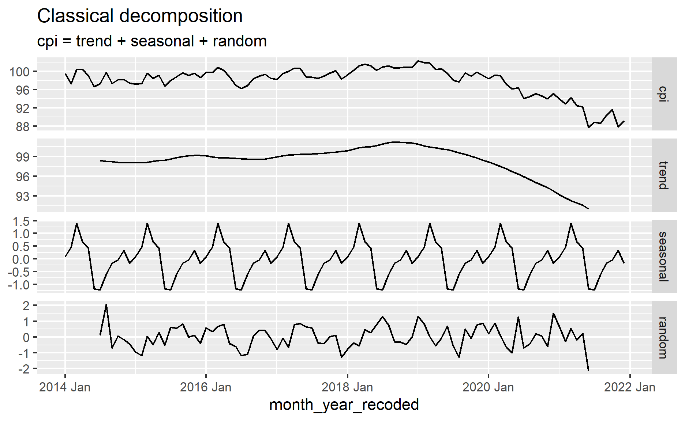

This post continues our previous topic on time series.
As the name of the post suggested, we will be breaking the time series into different components.

Time series components
In general, time series can be seen as made out of following components:
Trend
Seasonal
Remainder
It can be written in following mathematical format:
\[y_t = S_t + T_t + R_t\]
where
\(S_t\) is the seasonal component
\(T_t\) is the trend component
\(R_t\) is the remainder component
While the above mathematical expression shows the additive time series decomposition, it can be written as multiplicative decomposition as well.
\[y_t = S_t \times T_t \times R_t\]
So when should we use additive or multiplicative components?
This depends on the magnitude of seasonal variations or variation around trend.
If the variation seems to be increasing by time, then multiplicative components are likely to be more suitable.
Differences between the different methods
There are several methods in decomposing the time series (Hyndman 2021):
| Method | Remarks |
|---|---|
| Classical decomposition |
Some of the problems with this method: - the estimate of trend is not available for first few and last few observations - trend estimate tends to over-smooth rapid rises and falls - assume the seasonal components repeats from year to year, which may not be reasonable - not robust to outliers |
| X11 decomposition | Based on classical decomposition, but includes many extra steps and features to overcome the drawbacks of classical decomposition |
| SEATS decomposition |
The full name is seasonal extraction in ARIMA time series This method only works with quarterly and monthly data |
| STL decomposition |
The full name is seasonal decomposition of time series by
Loess Following are the advantages over the classical, SEATS and X11 decomposition methods: - Unlike SEATS and X11, this method handles any type of seasonality, not only monthly and quarterly data - Seasonal component is allowed to change over time - Seasonal component and smoothness of the trend can be controlled by the user - Trend and seasonal component of this method is robust to outliers |
Demonstration
Since the high inflation has been a hot topic, in this demonstration, I will be using the consumer price index dataset I obtained from Singstat website.

Taken from giphy
Setup the environment
First, I will setup the environment by calling the necessary packages.
pacman::p_load(tidyverse, lubridate, timetk, tsibble, janitor, feasts, fable, seasonal)
Next, I will import the dataset into the environment.
df <- read_csv("https://raw.githubusercontent.com/jasperlok/my-blog/master/_posts/2022-10-23-timesseries/data/M212881.csv",
skip = 10) %>%
slice(1:148) %>%
filter(`Data Series` != "Hawker Centres" &
`Data Series` != "Food Courts & Coffee Shops")
As some of the columns are imported in incorrect column types, I will
use sapply function to convert the columns into the correct
column types.
Once the columns are imported into the correct types, I will reshape
the dataset by using pivot_longer function.
start_date <- "2014-01-01"
end_date <- "2021-12-01"
df_1 <- df %>%
pivot_longer(!`Data Series`, names_to = "Month Year", values_to = "CPI") %>%
clean_names() %>%
mutate(month_year_recoded = ym(month_year)) %>%
select(-month_year) %>%
filter(month_year_recoded >= start_date & month_year_recoded <= end_date)
as_tsibble function is to convert the dataset into
tsibble dataframe.
We will pass month_year_recoded into index argument.
As another thing to take note is we need to pass info
df_1_ts <- df_1 %>%
mutate(month_year_recoded = yearmonth(month_year_recoded)) %>%
as_tsibble(index = month_year_recoded,
key = data_series)
Decompose the time series
In this demonstration, I will be using one of the items to demonstrate on how we could decompose the time series.
interested_cpi_item <- "Clothing & Footwear"
Before jumping into the time series decomposition, lets look at the time series again.
Classical Decomposition
From the graph, it seems like the seasonality or variation around time series are quite consistent throughout the period.
Hence, I will indicate the type should be additive in the
type argument in classical_decomposition
function.
classical_model <- df_1_ts %>%
filter(data_series == interested_cpi_item) %>%
model(classical_decomposition(type = "additive"))
classical_model
# A mable: 1 x 2
# Key: data_series [1]
data_series `classical_decomposition(type = "additive")`
<chr> <model>
1 Clothing & Footwear <DECOMPOSITION>The output consists of the selected data series and the model.
To extract the info of the fitted model, I will use the
components function.
classical_model %>%
components()
# A dable: 96 x 8 [1M]
# Key: data_series, .model [1]
# : cpi = trend + seasonal + random
data_series .model month_year_reco~ cpi trend seasonal random
<chr> <chr> <mth> <dbl> <dbl> <dbl> <dbl>
1 Clothing & Fo~ "clas~ 2014 Jan 99.5 NA 0.0906 NA
2 Clothing & Fo~ "clas~ 2014 Feb 97.3 NA 0.457 NA
3 Clothing & Fo~ "clas~ 2014 Mar 100. NA 1.40 NA
4 Clothing & Fo~ "clas~ 2014 Apr 100. NA 0.679 NA
5 Clothing & Fo~ "clas~ 2014 May 99.1 NA 0.419 NA
6 Clothing & Fo~ "clas~ 2014 Jun 96.6 NA -1.18 NA
7 Clothing & Fo~ "clas~ 2014 Jul 97.3 98.4 -1.22 0.111
8 Clothing & Fo~ "clas~ 2014 Aug 99.7 98.3 -0.597 2.06
9 Clothing & Fo~ "clas~ 2014 Sep 97.4 98.2 -0.174 -0.694
10 Clothing & Fo~ "clas~ 2014 Oct 98.2 98.1 -0.0440 0.0717
# ... with 86 more rows, and 1 more variable: season_adjust <dbl>Aside from the fitted values (i.e.trend, seasonal, random and season_adjust), it also contains the original time series value (i.e.cpi in this demonstration).
As the default value for seasonality in
classical_decomposition function is 12 (which 12 means its
a monthly seasonality), we can observe that the trend and
random column do not contain any value for the first 6
months and last 6 months.
We can visualize the different components by passing the objects into
autoplot function as shown below.
classical_model %>%
components() %>%
autoplot()
Note that there are some grey bars on the left side of the graphs.
Those bars represents the relative scales of the different components since all the components are plotted under different scales.
In other words, it probably be easier to understand the bars as how much we have zoomed in to illustrate the components.
The longer the bar, the more we have zoomed in.
Personally, I find the bars can cause some confusion when I try to explain the graph.
To avoid the unnecessary confusion, we can turn off the
scale_bars by passing FALSE into the
argument.
classical_model %>%
components() %>%
autoplot(scale_bars = FALSE)

We can also change the seasonality to other values.
Following are the values for the seasonality:
seasonality_df <- tibble(Value = c("4", "12", "7"),
`Corresponding seasonality` = c("Quarterly",
"Monthly",
"Daily"))
seasonality_df %>%
kbl(escape = FALSE) %>%
kable_paper("hover", full_width = F, html_font = "Cambria", font_size = 15)
| Value | Corresponding seasonality |
|---|---|
| 4 | Quarterly |
| 12 | Monthly |
| 7 | Daily |
So, if I were to change the seasonality to quarterly seasonality, below are the components of the revised model:
df_1_ts %>%
filter(data_series == interested_cpi_item) %>%
model(classical_decomposition(cpi ~ season(4),
type = "additive")) %>%
components() %>%
autoplot()
This revised decomposition model seems to perform worse than the decomposition model with monthly seasonality.
Under the quarterly decomposition model, there seems to have some patterns uncaptured by the seasonality.
X11 Decomposition
Next, I will use X11 decomposition method.
temp <- df_1_ts %>%
filter(data_series == interested_cpi_item) %>%
model(X_13ARIMA_SEATS(cpi ~ x11())) %>%
report()
Series: cpi
Model: X-13ARIMA-SEATS
Coefficients:
Estimate Std. Error z value Pr(>|z|)
AO2021.Jun -3.52197 0.85069 -4.140 3.47e-05 ***
AR-Seasonal-12 0.57036 0.09241 6.172 6.75e-10 ***
MA-Nonseasonal-01 0.38491 0.09214 4.178 2.95e-05 ***
---
Signif. codes: 0 '***' 0.001 '**' 0.01 '*' 0.05 '.' 0.1 ' ' 1
X11 adj. ARIMA: (0 1 1)(1 0 0) Obs.: 96 Transform: none
AICc: 287.1, BIC: 296.9 QS (no seasonality in final): 0
Box-Ljung (no autocorr.): 15.47 Shapiro (normality): 0.9895 objects(temp)
[1] "data_series" "X_13ARIMA_SEATS(cpi ~ x11())"df_1_ts %>%
filter(data_series == interested_cpi_item) %>%
model(X_13ARIMA_SEATS(cpi ~ x11())) %>%
components() %>%
autoplot()

Do refer to this instruction manual if you want to find out the arguments can be accepted by the functions.
For example, by default, the seasonal adjustment decomposition of X11 is set to be pseudo additive.
To change the type of seasonal adjustment decomposition, we will do the following:
Include the
transformargument- Otherwise, the code will return error even if we are not transforming the data series
Pass the selected type of seasonal adjustment decomposition calculation to the
modeargument
page 224
df_1_ts %>%
filter(data_series == interested_cpi_item) %>%
model(X_13ARIMA_SEATS(cpi ~ transform(`function` = "none") + x11(mode = "add"))) %>%
report()
Series: cpi
Model: X-13ARIMA-SEATS
Coefficients:
Estimate Std. Error z value Pr(>|z|)
AO2021.Jun -3.52197 0.85069 -4.140 3.47e-05 ***
AR-Seasonal-12 0.57036 0.09241 6.172 6.75e-10 ***
MA-Nonseasonal-01 0.38491 0.09214 4.178 2.95e-05 ***
---
Signif. codes: 0 '***' 0.001 '**' 0.01 '*' 0.05 '.' 0.1 ' ' 1
X11 adj. ARIMA: (0 1 1)(1 0 0) Obs.: 96 Transform: none
AICc: 287.1, BIC: 296.9 QS (no seasonality in final): 0
Box-Ljung (no autocorr.): 15.47 Shapiro (normality): 0.9895 Also, the manual mentioned above is also applicable for the
SEATS decomposition method that I am covering next.
SEATS Decomposition
Next, I will use SEATS to decompose the time series.
To do so, we can either just pass in the time series into
X_13ARIMA_SEATS function without specifying the specs or
explicitly indicate the specs should be seats.
Method 1: Without specifying the specs
df_1_ts %>%
filter(data_series == interested_cpi_item) %>%
model(X_13ARIMA_SEATS(cpi)) %>%
components() %>%
autoplot()
Method 2: Explicitly specify the specs as
seats
df_1_ts %>%
filter(data_series == interested_cpi_item) %>%
model(X_13ARIMA_SEATS(cpi ~ seats())) %>%
components() %>%
autoplot()

Note that the graph does not mention which adjustment is being
selected when seats specs is used to decompose the time
series.
Similarly, the report function allows to check the model
output result.
df_1_ts %>%
filter(data_series == interested_cpi_item) %>%
model(X_13ARIMA_SEATS(cpi ~ seats())) %>%
report()
Series: cpi
Model: X-13ARIMA-SEATS
Coefficients:
Estimate Std. Error z value Pr(>|z|)
AO2021.Jun -3.52197 0.85069 -4.140 3.47e-05 ***
AR-Seasonal-12 0.57036 0.09241 6.172 6.75e-10 ***
MA-Nonseasonal-01 0.38491 0.09214 4.178 2.95e-05 ***
---
Signif. codes: 0 '***' 0.001 '**' 0.01 '*' 0.05 '.' 0.1 ' ' 1
SEATS adj. ARIMA: (0 1 1)(1 0 0) Obs.: 96 Transform: none
AICc: 287.1, BIC: 296.9 QS (no seasonality in final): 0
Box-Ljung (no autocorr.): 15.47 Shapiro (normality): 0.9895 STL Decomposition
Lastly, I will use STL function to decompose the time
series.
As such, I will use the STL function from
feasts package to perform the task.
df_1_ts %>%
filter(data_series == interested_cpi_item) %>%
model(STL(cpi)) %>%
components()
# A dable: 96 x 8 [1M]
# Key: data_series, .model [1]
# : cpi = trend + season_year + remainder
data_series .model month_year_reco~ cpi trend season_year
<chr> <chr> <mth> <dbl> <dbl> <dbl>
1 Clothing & Footwear STL(c~ 2014 Jan 99.5 98.9 0.0215
2 Clothing & Footwear STL(c~ 2014 Feb 97.3 98.8 -0.0474
3 Clothing & Footwear STL(c~ 2014 Mar 100. 98.7 1.39
4 Clothing & Footwear STL(c~ 2014 Apr 100. 98.7 1.06
5 Clothing & Footwear STL(c~ 2014 May 99.1 98.6 0.535
6 Clothing & Footwear STL(c~ 2014 Jun 96.6 98.5 -1.24
7 Clothing & Footwear STL(c~ 2014 Jul 97.3 98.4 -1.13
8 Clothing & Footwear STL(c~ 2014 Aug 99.7 98.3 -0.395
9 Clothing & Footwear STL(c~ 2014 Sep 97.4 98.3 -0.185
10 Clothing & Footwear STL(c~ 2014 Oct 98.2 98.2 0.0158
# ... with 86 more rows, and 2 more variables: remainder <dbl>,
# season_adjust <dbl>As usual, I will pass the components to autoplot
function to visualize the graph.
df_1_ts %>%
filter(data_series == interested_cpi_item) %>%
model(STL(cpi)) %>%
components() %>%
autoplot()
STL function also allows the users to pass in additional
parameters.
For example, in the previous STL graph, the season is set as yearly as there is a _year beside season.
We can modify the seasonality by passing the information to
season argument as shown below.
df_1_ts %>%
filter(data_series == interested_cpi_item) %>%
model(STL(cpi ~ season(3))) %>%
components() %>%
autoplot()
The graph will show the number of observations in each seasonal period we have indicated in the earlier argument.
For more information on the parameters allowed, please refer to the documentation page.
Conclusion
Thats all for the day!
Thanks for reading the post until the end.
Feel free to contact me through email or LinkedIn if you have any suggestions on future topics to share.
Refer to this link for the blog disclaimer.
Till next time, happy learning!
Photo by Keila Htzel on Unsplash